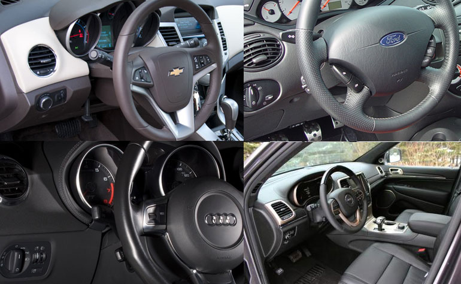
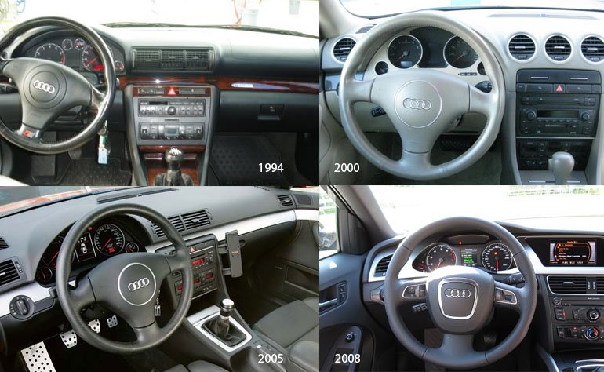
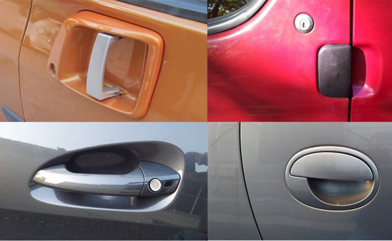
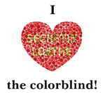

User Experience Design
Richie Taylor | UX Manager, Analytics
Who am I?
Maker, Thinker, Quantified selfer, and Cryptocurrency enthusiast, who has been working as a professional designer for over 15 years, with 10 years of that being User Experience Design.
- Out of Bounds Creative - 2005-2013
- Ellucian - 2013-2014
- Electronic Arts - 2014-2017
What is User Experience Design?
- User Experience - a person’s behaviors, attitudes and emotions about using a particular product, system or service.
- Design - to create, fashion, execute, or construct according to plan.
An empathetic advocate for the user.
Elements of User Experience Design
UX? they do wireframes, right? 
| What UX consists of | How UX is seen |
|---|---|
|
|
Disciplines of a UX Professional
| Name | Abbrevation | Meaning |
|---|---|---|
| User Experience | UX | How the user thinks and feels |
| Information Architecture | IA | How the overall system is organized |
| Visual Design | VxD | How the system looks |
| User Interface Design | UI | Aesthetic, and how the screen is organized |
| Interaction Design | IxD | How the user and device act and react |
| Information Design | ID | How the information on a screen is organized |
| Data Visualization | DataViz | How the data is visually represented |
| Content Strategy | CS | How the content is organized and read |
nThrive, Pillars of UX
- User Familiarity
- Consistency
- Affordance
- Protection
- Accessibility
User Familiarity
- Use words, phrases, and concepts familiar to the user, rather than system-oriented terms (jargon)
- Leverage real-world conventions, making information appear in natural and logical order
- Use controls that are well understood
Don't reinvent the wheel
Consistency
Maintaining consistency in patterns, will insure that our users are able to transition seamlessly from product to product without playing mental gymnastics.
- Labeling and location of calls-to-action
- Nomenclature (Payer, Payor??)
- Palette
- Design Patterns
Consistency is the foundation of trust
Affordance
Affordance is the concept that an object or element projects the possibility of an action.
- Buttons, look like buttons
- Hyperlinks, are underlined, indicating they're interactive.
- (The system should always keep users informed about what is going on (spinners and progres bars
The brain views the world in terms of utility
Protection
We need to protect our users from making irrecoverable, or time consuming mistakes.
- Confirmation when deleting
- Are you sure you want to...
- You are about to...
$@#&!
Accessibility
It is estimated that 20% of the population has some kind of disability.
- Visual - colorblindess, low vision, blindness
- Hearing - Deafness and hard of hearing
- Motor - inability to use a mouse, slow response time, limited fine motor control
- Cognitive - learning disabilities, distractibility, inability to focus on large amounts of information

Process
- Discovery
- Definition
- Organize systems and content
- Design
- Testing
- Deliver
Discovery
- Understand your team and stakeholders
- Understand your competition
- Understand your audience
- Understand business requirements
- Understand limitations (technical, legal, etc)
Definition
- Define Scope: What are your requirements?
- Define Structure: How should you organize content?
- Define Flow: How will users interact with your product?
Organize systems and content
- Card Sorting
- Opportunity Workshops
- Value vs Complexity Charting
Iterate on definition after organizing
Create
Information Architecture
- Product Maps
- Taxonomic Charts
- Labels and Tagging
- Navigation and Wayfinding
Interaction Design
- Sketching - Try things that fail
- Wireframes (Low Fidelity)
- Flow Charts
- Paper Prototypes
Test
Craft rudimentary tests for validating design decisions.
- 5 second test
- Invision Prototype
- UserTesting.com
- Qualitative Surveying
Iterate.
Deliver
Produce documentation and deliverables for engineers, and stakeholders
- High Fidelity Wireframes
- Prototypes
- Spec Sheets
- Use Flows